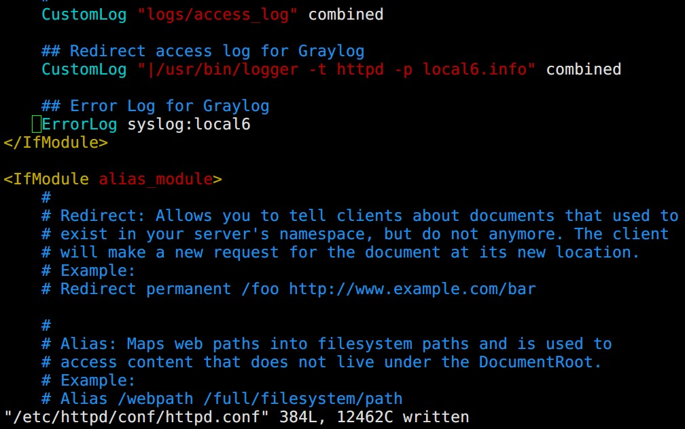
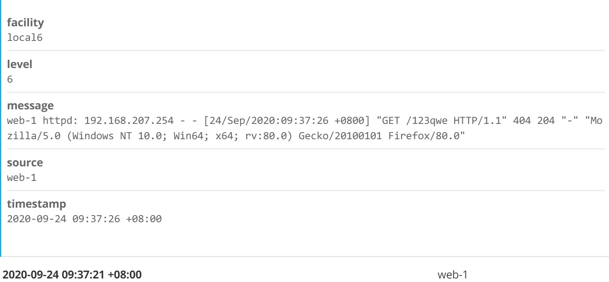
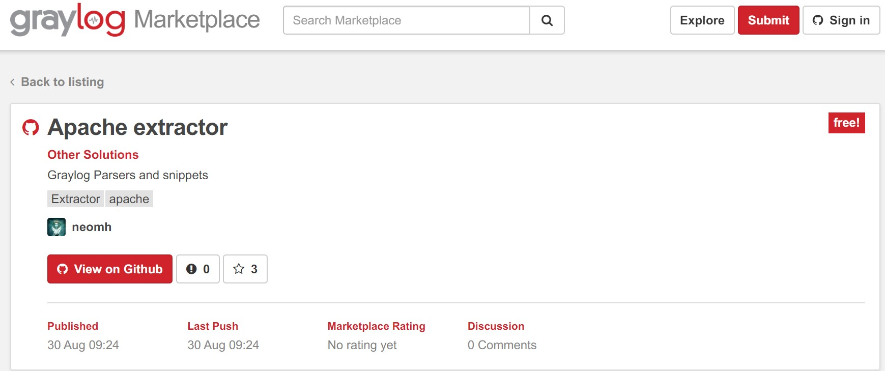
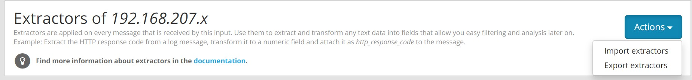
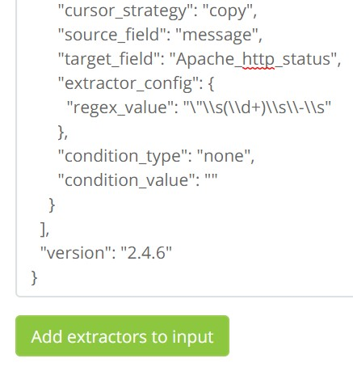
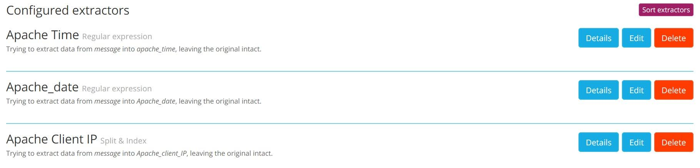
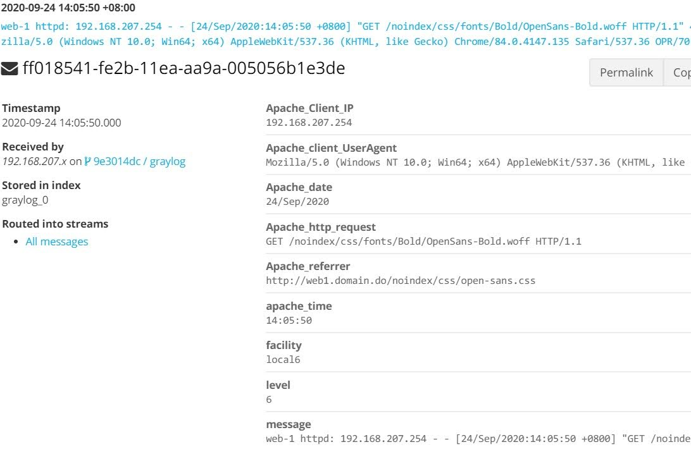
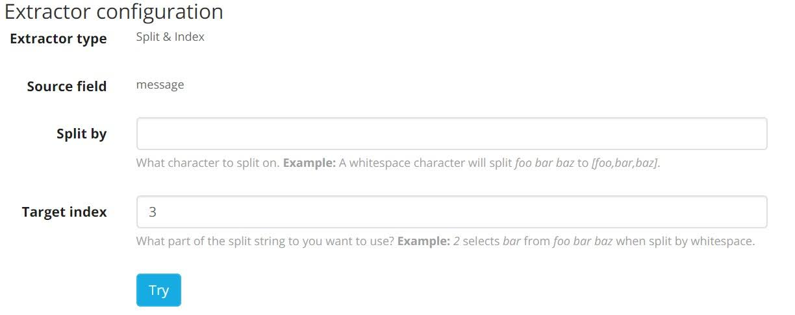
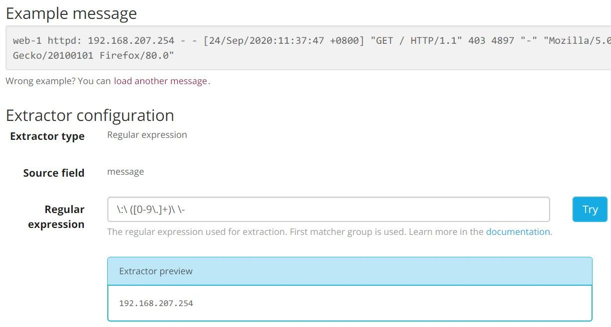

將 Apache (access|error) log 透過 rsyslog 發至 Graylog
Contents
由於 httpd 預設沒有將 access/error log 丟到 syslog 做處理，要需手動新增
新增方式有兩種
- 直接編輯
httpd.conf將 log file 導向到 syslog - 編輯
rsyslog.conf叫 rsyslog 去撈本來存放在/var/log/httpd/(access|error).log
第一種方式會需要做 systemctl reload httpd.service ，對於線上運作中的機器有一定風險 一個弄不好鍋就是你戴好 ^^
雖然有文章指出 reload 不會中斷現有的 connection 不過還是少碰為妙
How to do an Apache Graceful Restart in CentOS 7
但不管以哪種方式都是需要在 rsyslog 設定把 log 發向 Graylog server
vim /etc/rsyslog.conf
新增
|
|
接著 restart rsyslog
1. 直接編輯 httpd.conf 將 log file 導向到 syslog
Ship Apache HTTPd Logs to Graylog2 Via Rsyslog
編輯 /etc/httpd/conf/httpd.conf
新增
|
|

接著重新啟動 httpd systemctl reload httpd.service
2. 編輯 rsyslog.conf 叫 rsyslog 去撈本來存放在 /vart/log/httpd/(access|error).log
新增 /etc/rsyslog.d/apache.conf
內容
|
|
接著 restart rsyslog
完成之後就能在 Graylog 上面看到 httpd 產生的 access/error log 了

不過欄位非常簡易，還好官方有提供 Extractor 能夠從接收到的 Message 抓出其中的資訊
在 Graylog Marketplace 可以找到很多其他大大已經建立好的 Extractor，萬一找不到也可以自己做一個喔~
這邊我們直接搜尋 Apache ，找到 neomh 這位大大公開分享的 Apache extractor ，把 json code 複製下來

從 System > Inputs > Actions > Import extractor 即可匯入


從這邊可以 管理/調整 各項 Extractor

以後接收到 httpd 的 log 在 Graylog 上面就會多出幾個實用欄位

其中 Client IP 的部分因為接收到的 log 格式與 neomh 大大不同，需要自行調整
我們接收到的 log
|
|
neomh 當時接收到的 log
|
|
發現了嗎? Client IP 欄位我們在第三格 (以空白鍵分隔)，而 neomh 的則是在開頭。
手動修改 Extractor

或者可以自行新增正規表示法版本的 Client IP Extractor

Author 老柯
LastMod 2020-09-24